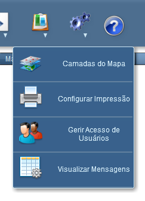
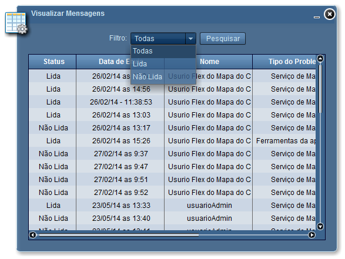
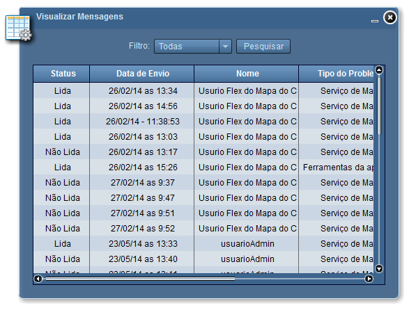
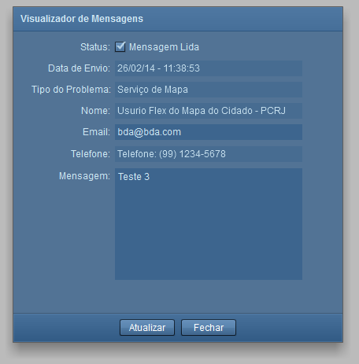

Visualizar Mensagens
A ferramenta Visualizar Mensagens permite, ao administrador do sistema, visualizar mensagens reportadas através da ferramenta Relatar Problemas
Passos para Visualizar Mensagens:
1 - Clicar sobre o símbolo “Visualizar Mensagens”;

2 - Será aberta a ferramenta “Visualizar Mensagens”. No campo "Filtro" selecione o tipo de mensagem que deseja visualizar;

3 - Clique em "Pesquisar". As mensagens serão carregadas na ferramenta;

4 - Clique na mensagem que deseja visualizar. Uma nova janela será aberta exibindo a mensagem completa. Clique em "Fechar" se nada for alterado, ou clique em "Atualizar" para salvar o "Status" da mensagem.
